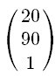

css transform2D入门
描述：
与标准浏览器都提供了相应的属性进行transform2d, IE使用万能的矩阵滤镜， 标准浏览器使用其前缀的css transform 属性。但矩阵与表示颜色的十六进制字符串一样， 都是不友好的，因此CSS3提供了一种更好的表述方式：
#object {
transform-origin: 0 0;
transform: rotate(15deg) translateX(230px) scale(1.5, 2.6) skew(220deg, -150deg) translateX(230px)
}
我们当然可以直接这样用在标准浏览器上，但在旧式IE就要经过一番转换，如果要把它们储存起来，矩阵的形式可能更方便。
上面的CSS样式规则相当于
#object {
transform-origin: 0 0;
transform: matrix(1.06, 1.84, 0.54, 2.8, 466px, 482px)
}
那么它是怎么转换的呢？我们简化CSS矩阵函数里面的内容，如下：
#transformedObject {
transform: matrix(1, 2, 3, 4, 5, 6);
}
在数学上是用如下的形式如描述它的，注意每个数值的位置。
点乘 dot product
下面我们将理解矩阵计算的一个重要概念，向量点乘。向量点乘是对应分量乘积的和，其结果是一个标量。假如有两个点(1 2)与(4 5)， 那么它们的点乘就是(1 2)·(4 5)=1*4+2*5 = 4+10 = 14
对于3维坐标或更高维的坐标，我们一样可以这样计算：
对于点(x y)，我们也通常称其为向量(x y)， 它可以横着放，就是现在这样的写法，也可以坚着放
在transform2d中，我们通常会在其后面加上第三个数，1放到最后，如(20 90)显示为(20 90 1)或者
矩阵与向量的乘法
好了，接下来我们了解transform2d的另一个重要运算。
其运算过程如下：
现在我们看一下CSS transform属性是怎么应用矩阵的吧。假若有如下一个样式规则:
#transformedObject {
position: absolute;
left: 0px;
top: 0px;
width: 200px;
height: 80px;
transform: matrix(0.9, -0.05, -0.375, 1.375, 220, 20);
transform-origin: 0 0;
}
那么这个元素节点在页面上的四个点的坐标显示如下：
然后我们计算一下这个元素的右下角的点，在transform规则的影响下会移到什么地方去。右下角的点的坐标为（200 80），我们说过，它等价于(200 80 1)
或
然后是右上角(200 0)
接着是左下角(0 80)
最后是左上角(0 0)
最最后我们把这四个点连起来，就得到变形后的元素的样子了。
我们再来看一下CSS3 transform 中的rotate translate scale skew分别等价于什么吧
比如有一个样式规则如下：
#o1 {
transform-origin: 0px 0px;
transform: rotate(15deg) translateX(230px) scale(1.5);
}
那么它用矩阵表示如下：
Matrix = translate x rotate x scale x skew